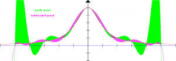
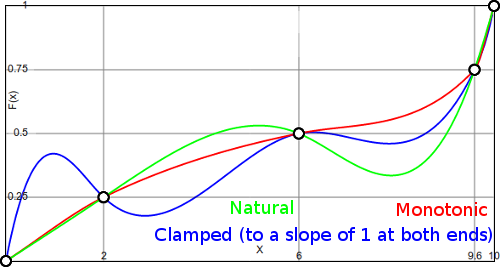

Just like before with polynomial interpolation, we have a list of $n+1$ given point $(x_i, y_i)$ with $x_0 < x_1 < \dots < x_n$.
We want to find a function that goes through those points and approximates the underlying function that produced those points as well as possible.
Polynomial interpolation
The problem of polynomial interpolation was oscillations at the end of the interval you wanted to interpolate (see interactive example):
{kind=link}

As you can see, polynomial interpolation with equally spaced points is very, very bad at the ends of the interval. Tschebyscheff spaced points are much better, but you can still see that the interpolated function is different from the original.
Splines
A way to solve this problem are splines. A spline is a piecewise-defined function that goes through some points (aka knots) and is smooth.
More formally: Let $s: [x_0,x_n] \rightarrow \mathbb{R}$ be a spline. Then:
- (S1) cubic: $\forall i \in \{1, \dots, n\}: s|_{x_{i-1}, x_i}$ is a cubic function
- (S2) interpolation: $\forall i \in \{0, \dots, n\}: s(x_i) = y_i$
- (S3) smooth: $s \in C^2([x_0, x_n])$ and $\int_{x_0}^{x_n} s''(x)^2 \mathrm{d}x$ is minimal
When you use a cubic function $a x^3 + b x^2 + cx + d$ for each of the $n$ intervals that we got by our $n+1$ points, you have $4n$ variables that you need to calculate.
Condition (S2) gives two equations per interval which makes $2n$ equations of the form:
$$ \begin{align} y_i &= a_i x_i^3 &&+ b_i x_i^2 &&+ c_i x_i &&+ d_i\ y_{i+1} &= a_i x_{i+1}^3 &&+ b_i x_{i+1}^2 &&+ c_i x_{i+1} &&+ d_i \end{align} $$
At first glance condition (S3) - $s \in C^2([x_0, x_n])$ - seems to be redundant with (S1) - $s$ is piecewise cubic. Every polynomial is in $C^\infty(\mathbb{R})$, so it certainly is in $C^2([x_0, x_n])$.
That's correct. But $s$ is not a polynomial. It's only piecewise-defined as a polynomial. That makes a difference at the ends of the intervals. And it gives us $2n-2$ more equations:
$$\displaystyle \begin{align} s_i' (x_{i}) &= s_{i+1}'(x_{i}) \;\;\; &&\forall i=1, \dots, n-1\ s_i''(x_{i}) &= s_{i+1}''(x_{i}) \;\;\; &&\forall i=1, \dots, n-1 \end{align} $$
which is equivalent to
$$\displaystyle \begin{align} 3a_i x_i^2 + 2b_i x_i + c_i &= 3a_{i+1} x_i^2 + 2b_{i+1} x_i + c_{i+1} \;\;\; &&\forall i=1, \dots, n-1\ 6a_i x_i + 2b_i &= 6a_{i+1} x_i + 2b_{i+1} \;\;\; &&\forall i=1, \dots, n-1 \end{align} $$
All equations we have are linear. Please note that the variables we want to determine are $a_i, b_i, c_i, d_i$. So $x_i^3$ is simply a multiplicative constant that we have to evaluate before we solve our system of equations.
But at the moment, we only have $2n+2\cdot(n-1) = 4n -2$ equations, but we have $4n$ variables. So we need ancillary conditions to solve this linear system of equations.
Possible ancillary conditions
- natural splines: $s''(x_0) =0, \;\;\; s''(x_n) = 0$
- clamped splines: $s'(x_0) = f'(x_0),\;\;\; s'(x_n)= f'(x_n)$ where $y_0'$ and $y_n'$ can be any value
- periodic: $s'(x_0) = s'(x_n), \;\;\; s''(x_0) = s''(x_n)$
- not-a-knot: $s_1''' = s_2''', \;\;\; s_{n-1}''' = s_{n}'''$
George MacKerron shows how the results can differ in his article Cubic splines in JavaScript (via CoffeeScript):
{kind=link}

Code for natural splines
I will store splines as a list of maps. Each map is one piece of the spline and has:
- $u$: Start of the interval
- $v$: End of the interval
- $a,b,c,d$: cubic function $ax^3 + bx^2 + cx +d$
Please note that I didn't test the code below. It's likely that there are errors with indices.
#!/usr/bin/env python
# -*- coding: utf-8 -*-
def niceCubicPolynomial(p):
tmp = ""
if p["a"] == 1:
tmp += " x^3"
elif p["a"] != 0:
tmp += "%.2fx^3" % p["a"]
if p["b"] == 1:
tmp += "\t+ x^2"
elif p["b"] != 0:
tmp += "\t+ %.2fx^2" % p["b"]
else:
tmp += "\t\t"
if p["c"] == 1:
tmp += "\t+ x"
elif p["c"] != 0:
tmp += "\t+ %.2fx" % p["c"]
else:
tmp += "\t\t"
if p["d"] != 0:
tmp += "\t+ %.2f" % p["d"]
return tmp
def getSpline(points):
""" points should be a list of maps,
where each map represents a point and has "x" and "y" """
import numpy, scipy.linalg
# sort points by x value
points = sorted(points, key=lambda point: point["x"])
n = len(points) - 1
# Set up a system of equations of form Ax=b
A = numpy.zeros(shape=(4 * n, 4 * n))
b = numpy.zeros(shape=(4 * n, 1))
for i in range(0, n):
# 2n equations from condtions (S2)
A[i][4 * i + 0] = points[i]["x"] ** 3
A[i][4 * i + 1] = points[i]["x"] ** 2
A[i][4 * i + 2] = points[i]["x"]
A[i][4 * i + 3] = 1
b[i] = points[i]["y"]
A[n + i][4 * i + 0] = points[i + 1]["x"] ** 3
A[n + i][4 * i + 1] = points[i + 1]["x"] ** 2
A[n + i][4 * i + 2] = points[i + 1]["x"]
A[n + i][4 * i + 3] = 1
b[n + i] = points[i + 1]["y"]
# 2n-2 equations for (S3):
if i == 0:
continue
# point i is an inner point
A[2 * n + (i - 1)][4 * (i - 1) + 0] = 3 * points[i]["x"] ** 2
A[2 * n + (i - 1)][4 * (i - 1) + 1] = 2 * points[i]["x"]
A[2 * n + (i - 1)][4 * (i - 1) + 2] = 1
A[2 * n + (i - 1)][4 * (i - 1) + 0 + 4] = -3 * points[i]["x"] ** 2
A[2 * n + (i - 1)][4 * (i - 1) + 1 + 4] = -2 * points[i]["x"]
A[2 * n + (i - 1)][4 * (i - 1) + 2 + 4] = -1
b[2 * n + (i - 1)] = 0
A[3 * n + (i - 1)][4 * (i - 1) + 0] = 6 * points[i]["x"]
A[3 * n + (i - 1)][4 * (i - 1) + 1] = 2
A[3 * n + (i - 1)][4 * (i - 1) + 0 + 4] = -6 * points[i]["x"]
A[3 * n + (i - 1)][4 * (i - 1) + 1 + 4] = -2
b[3 * n + (i - 1)] = 0
# Natural spline:
A[3 * n - 1 + 0][0 + 0] += 6 * points[0]["x"]
A[3 * n - 1 + 0][0 + 1] += 2
b[3 * n - 1 + 0] += 0
A[3 * n + n - 1][4 * (n - 1) + 0] += 6 * points[n]["x"]
A[3 * n + n - 1][4 * (n - 1) + 1] += 2
b[3 * n + n - 1] += 0
x = scipy.linalg.solve(A, b)
spline = []
for i in range(0, n):
spline.append(
{
"u": points[i]["x"],
"v": points[i + 1]["x"],
"a": float(x[4 * i + 0]),
"b": float(x[4 * i + 1]),
"c": float(x[4 * i + 2]),
"d": float(x[4 * i + 3]),
}
)
return spline
if __name__ == "__main__":
points = []
points.append({"x": 0.0, "y": -4})
points.append({"x": 1.0, "y": 9})
points.append({"x": 2.0, "y": 35})
points.append({"x": 3.0, "y": 70})
spline = getSpline(points)
for p in spline:
tmp = "[%.2f, %.2f]:" % (p["u"], p["v"])
tmp += niceCubicPolynomial(p)
print(tmp)